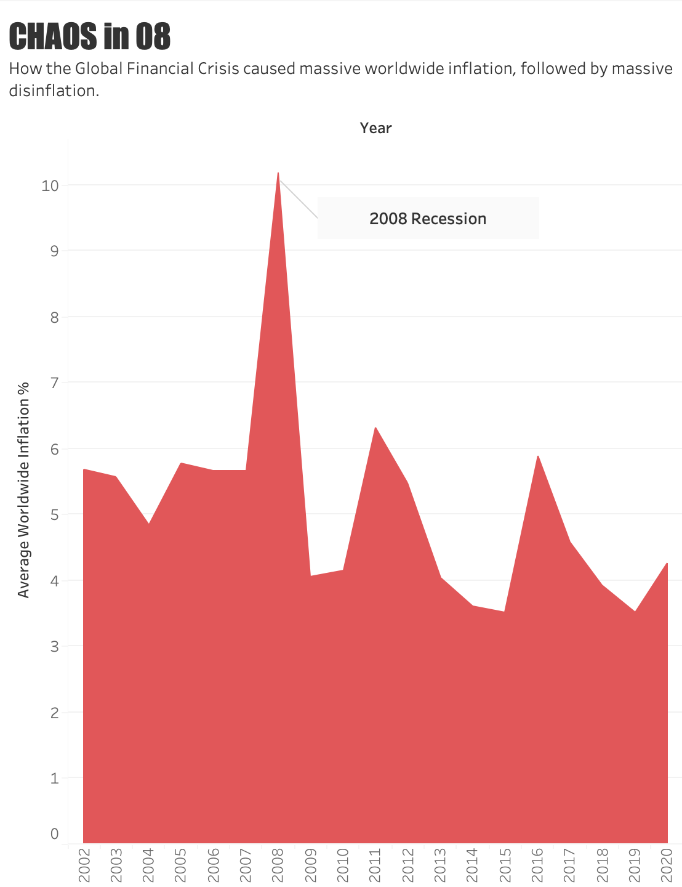
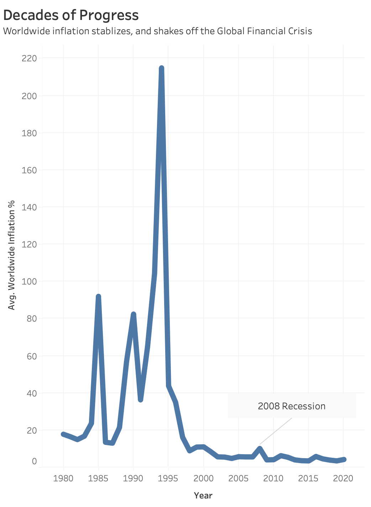

Proposition: The Global Financial Crisis rocked the world, causing massive inflation followed by massive disinflation.
FOR the Proposition

Design Decisions and Rationale:
- The chart is painted and filled in Red to showcase the severity of the inflation. This gives context to the reader that inflation is bad, as charts trending upwards usually represent financial success or appreciation of an asset.
- The data is filtered to post 2001, as it gives adequate pre and post 2008 context for inflation rates.
- The title is bolded and in block letters to give emphasis on the state of the economy in 2008, to prompt the reader with a better understanding of the sentiment during that time period.
AGAINST the Proposition

Design Decisions and Rationale:
- The chart uses a neutral blue color, giving the reader a sense of calamity and easing inflation, extenuating the decreasing inflation.
- The data includes all years available in the dataset to give accurate historical context.
- The 2008 Recession label shows the insignificance of the inflation change relative to all other years.
Final Reflection
This project has pushed the limits for me, for what can be considered deceptive versus graphic enhancements. For example, the techniques I employed in Figure 1 were simply due to what I felt was appropriate. Most charts, especially financial charts, have upward trends that show growth or a positive message, but inflation is a negative one. This pushed me to make the chart red to showcase it was actually a bad thing there was an upward trend. The more controversial change is that the data is filtered to just the past 20 or so years. While some would criticize this as “hiding” historical inflation, inflation is felt relative to its most recent years, the same way that interest rates are. One of the most common arguments in homebuying today is that interest rates aren't actually that high when you zoom out and look at the bigger picture. While this is true, it ignores the massive increase in home prices that have happened as a result of sub 5% rates, the same way that inflation around 2008 was low and stable for that period. This is furthered by how people actually felt during that time, prices were fluctuating seemingly daily and many had no idea what financial picture they would wake up to find themselves in tomorrow.
On the other hand, Figure 2 shows that historical worldwide inflation was much more volatile, and the 2008 Recession was just a blip in the picture. This is also an accurate statement, as many other countries went through rapid inflation and disinflation historically prior to 2008. There are a few issues with this interpretation, just like in Figure 1. Firstly, inflation is felt relative to its closest years, so adding historical context doesn’t help much. Someone accustomed to 20% inflation, like in other countries like Colombia (I am half Colombian), don’t feel inherently squeezed by it year over year. Secondly, the data equally weighs all countries together. While this is an issue with Figure 1 as well, there were more frequent and severe periods of hyperinflation in other countries prior to 2008. This skews the data as a country with 200,000 residents will have the same impact on the worldwide average inflation as a country with billions of residents. Some historical examples include Brazil, who had inflation of 20,000% in some years. A more accurate representation of this data would account for the population of the country, calculating average inflation per person in the world by their country. This would still show 2008 was not an inflation anomaly, but it would represent this data more accurately.
While the central idea that inflation was significantly rocky during the 2008 recession is plausible, I truly believe there is no right or wrong answer. There are many things that are tough to visualize alongside this, like personal sentiment during that time. Both Figures have areas for improvement to make the visualizations more accurate and objective, at the risk of sacrificing visual emphasis.